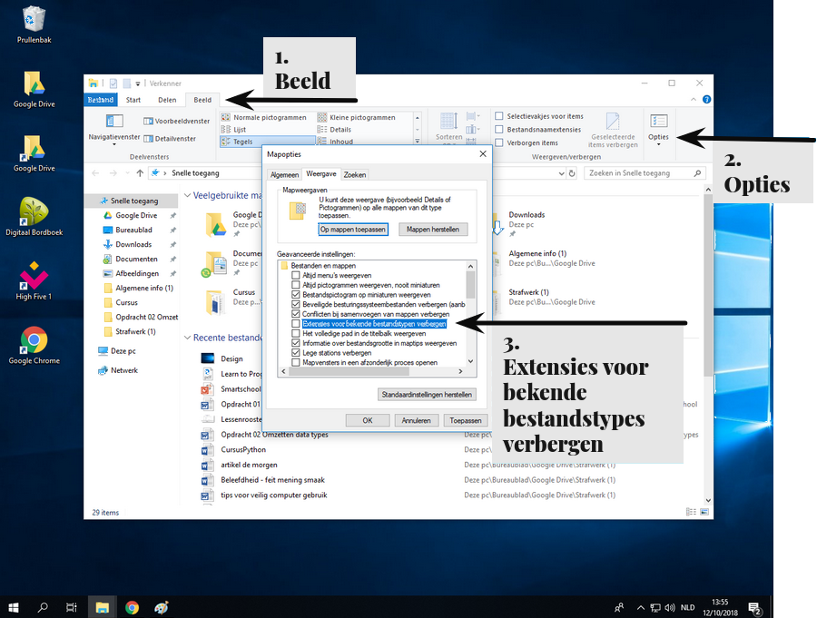

Bestand extensies
Wat zijn bestand extensies?
Bestand extensies zijn de letters die na het punt in een bestandsnaam komen. Ze geven aan wat voor type bestand het is en helpen het besturingssysteem te bepalen welke applicatie het bestand kan openen. Ze fungeren als een soort label dat vertelt hoe het bestand gelezen of geopend moet worden.
- text.txt
- afbeeling.jpg
- word-document.docx
In webdesign gebruiken we verschillende soorten bestanden. Het is belangrijk om de bestandsextensies zichtbaar te hebben, omdat dit ons helpt te weten welk type bestand we gebruiken. Helaas verbergt Windows deze extensies.
Door de extensies zichtbaar te houden, kunnen we gemakkelijk bestanden identificeren en van extensie (en dus ook type) veranderen.
Bestand extensies tonen
beeld > opties Weergave > extensies voor bekende bestandstypes verbergen

Experiment
- Download een afbeelding van het internet.
Door de .jpg, .jpeg of .png extensie weten we dat het een afbeelding is. - Klik met de
Rechter muisknop op de afbeelding, kies
naam wijzigen en verander de extensie naar ‘.txt’ zodat de computer denkt dat het een tekstbestand is.
Dubbelklik
op de afbeelding zodat het opent met een tekstprogramma (omdat de computer denkt dat het een tekstbestand is).
Wat we nu te zien krijgen is de computer code waaruit de afbeelding bestaat.
Hoe snel kan ik deze website maken?
Ik ga jullie nu laten zien hoe je onderstaande website maakt.
vraag
Hoe lang zal het duren om deze simple Hello world website te maken.
Zelf proberen
vraag
Hoe snel kan je dit zelf?
- Maak een nieuw tekstdocument.
- Hernoem het document naar
index.html
, zorg dat de bestand extensies zichtbaar zijn anders krijg je een dubbele extensie.
Bijvoorbeeld: text.html.txt
Je zal het icoontje zien veranderen van een tekstdocument naar een website icoontje. - Op het bestand met kladblok.
- Schrijf Hello world en sla het bestand op.
- Open het bestand met een webbrowser.